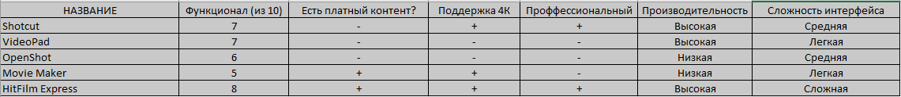

Хотелось бы теперь проанализировать некоторые моменты и показать, какие из выше перечисленных видео редакторов имеют: свойства и свои плюсы и минусы.

Исходя из данных выбранных показателей и свойств, можно определить, какой видео редактор стоит использовать для той или иной цели.